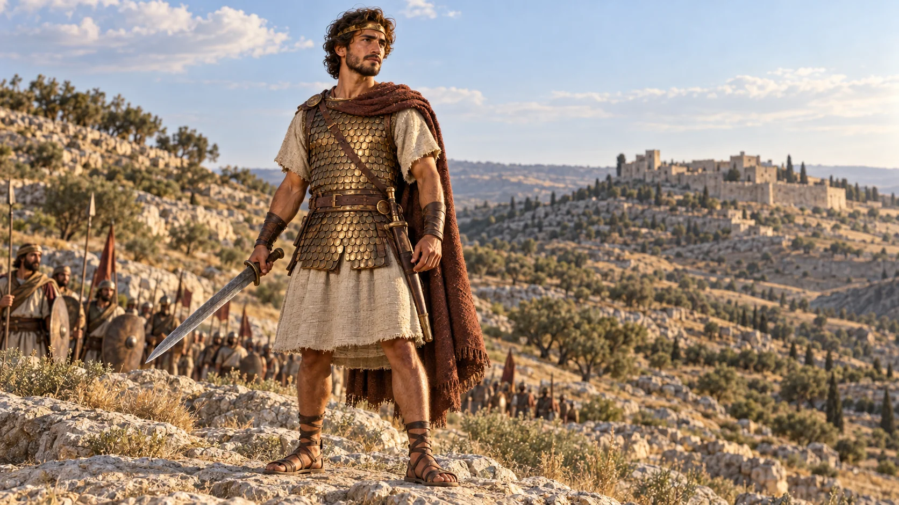
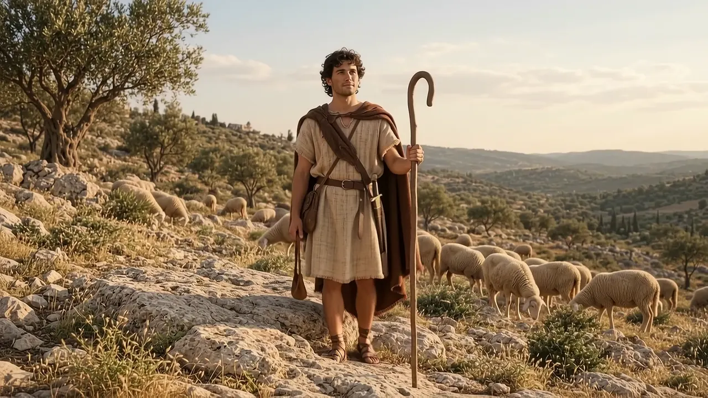

01 / FÉ
Fé que forma.
Cultivar intimidade com Deus e buscar sua direção nas escolhas de cada dia.
Buscar a direção de Deus.Homens de Sucesso é o ministério de homens da Igreja ADAlpha. Um convite a cultivar intimidade com Deus, fortalecer o caráter e viver com coragem para assumir os compromissos de cada dia.
O propósito começa
com o que está em suas mãos.
O verdadeiro sucesso começa na intimidade com Deus. Ele amadurece nas escolhas que fazemos, na fidelidade aos compromissos e na disposição para servir.
Homens de Sucesso comunica essa direção: homens que crescem na fé, assumem responsabilidades e vivem com coragem para cuidar, servir e construir um legado.
Reconheça o que orienta nossa caminhadaNa presença de Deus.
Nas escolhas de cada dia.
No próximo passo.
Cultivar intimidade com Deus e buscar sua direção nas escolhas de cada dia.
Buscar a direção de Deus.Honrar a palavra, cuidar do que está sob nossa responsabilidade e permanecer fiel no pouco.
Honrar os compromissos.
Dar o próximo passo com propósito, assumir compromissos e agir com fé e responsabilidade.
Agir com responsabilidade.As imagens representam o personagem bíblico Davi.
Homens de Sucesso se organiza em cinco níveis: pastor principal, líder principal, gestores, bases e líderes de base. São 12 gestores, cada um responsável por uma base, e dois líderes em cada base.
Essa estrutura torna visível a ligação entre a direção do ministério e suas bases.
Conheça nossa estruturaPrévia da estrutura: 38 posições de liderança e 12 bases. Nomes oficiais e fotos reais aguardam cadastro. Os números identificam posições, não pessoas já identificadas.

Reserve um momento para relacionar a mensagem à sua vida.
Reconheça uma responsabilidade que pede sua atenção e fidelidade.
Identifique uma atitude que pode assumir com os recursos disponíveis hoje.
Considere como agir com responsabilidade, coragem e disposição para servir.
Escolha um compromisso concreto
e dê o próximo passo.
Continue sua reflexão com livros do pastor Jairo Manhães e leituras bíblicas relacionadas à fé, ao discernimento e ao compromisso.
Seleção editorial baseada nos títulos e descrições públicas da loja oficial. As indicações não constituem um plano institucional de leitura.
Referências bíblicas para continuar a reflexão.
Davi, suas responsabilidades e sua confiança em Deus.
Qual responsabilidade pede minha fidelidade hoje?Meditação na Palavra e direção para a caminhada.
Como tenho dado espaço à Palavra nas minhas escolhas?Confiança em Deus e reconhecimento de sua direção.
Em que decisão preciso buscar a direção de Deus?A caminhada de fé se expressa nas escolhas de cada dia. Cuide do que está sob sua responsabilidade e dê o próximo passo com coragem.
Assista à mensagem